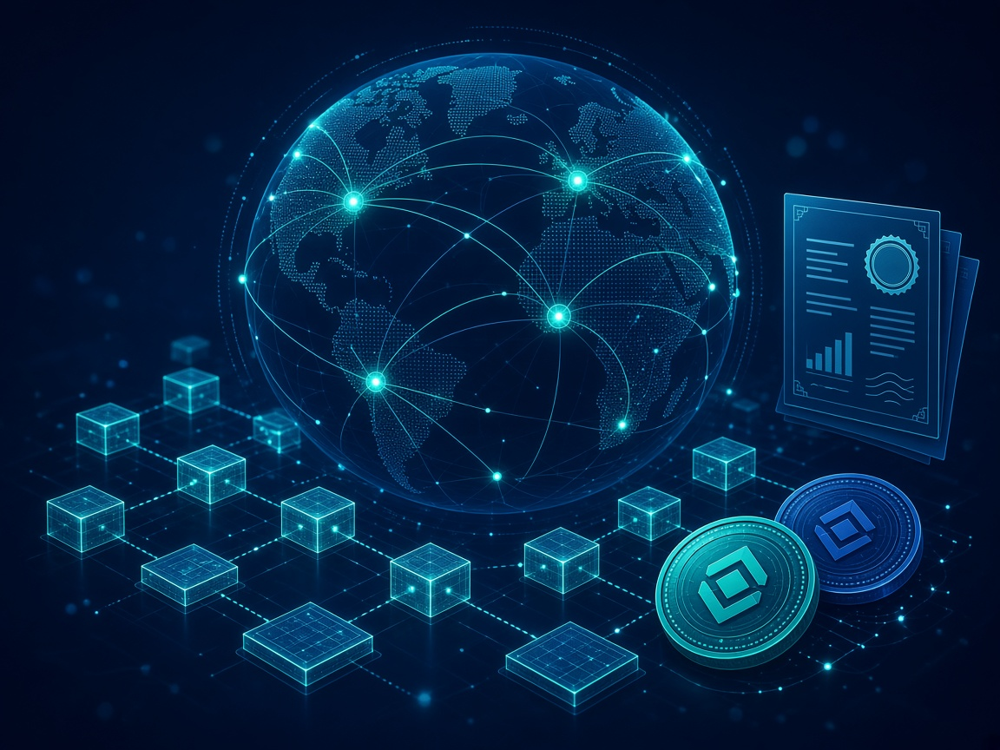

Blockchain
The XRP Ledger (XRPL) Explained Simply

The XRP Ledger (XRPL) is a public, open-source blockchain built for fast, low-cost payments. Live since 2012, it settles transactions in a few seconds for a tiny fee, and its native digital asset is XRP. Today it is increasingly used for stablecoins and tokenized real-world assets as well as payments.
How it works
XRPL does not use mining (proof-of-work) or staking (proof-of-stake). Instead, independent servers called validators agree on which transactions to accept. Each server keeps a list of validators it trusts, known as a Unique Node List. When roughly 80% of those trusted validators agree, a new ledger version closes and its transactions are final.
- Speed. Ledgers typically close every 3 to 5 seconds, averaging around 4 seconds on a normal day.
- Cost. The base fee is 10 drops, or 0.00001 XRP, rising slightly under heavy load to deter spam.
- Energy. With no mining race, it uses far less energy than proof-of-work chains.
- Account reserve. Opening an account currently needs 1 XRP held in reserve, reduced from 10 XRP after a December 2024 validator vote.
Built-in features
- Native token issuance. Anyone can issue tokens directly on the ledger without writing a smart contract.
- Built-in exchange. XRPL has its own decentralised exchange order book and an automated market maker (AMM).
- Bridge currency. XRP can act as a bridge between two currencies for cross-border payments.
Payments and stablecoins
XRPL was designed for moving value across borders quickly. Ripple's US dollar stablecoin, RLUSD, launched in December 2024 and is issued on both XRPL and Ethereum. It is backed 1:1 by cash and short-term US Treasuries, issued by a New York-regulated trust company, with monthly third-party attestations.
Tokenization of real-world assets
XRPL has become a notable home for tokenized real-world assets (RWAs) such as tokenized Treasuries, bonds, funds and commodities. According to Q2 2026 XRP tokenholder reports from Messari and Blockworks, tokenized RWA value on XRPL reached about US$4.46 billion at the end of June 2026, up from about US$2.25 billion at the end of March.
Things to keep in mind
- XRPL is not Ripple. XRPL is an open network. Ripple is a company that builds products on it and holds a large amount of XRP.
- Price is volatile. Like all crypto assets, XRP's price can move sharply.
The takeaway
XRPL is a long-running blockchain focused on payments, stablecoins and tokenized assets. Understanding how it works helps you look beyond the price chart to what the network actually does.
This article is for general information and education only. It is not financial, investment, legal or security advice.